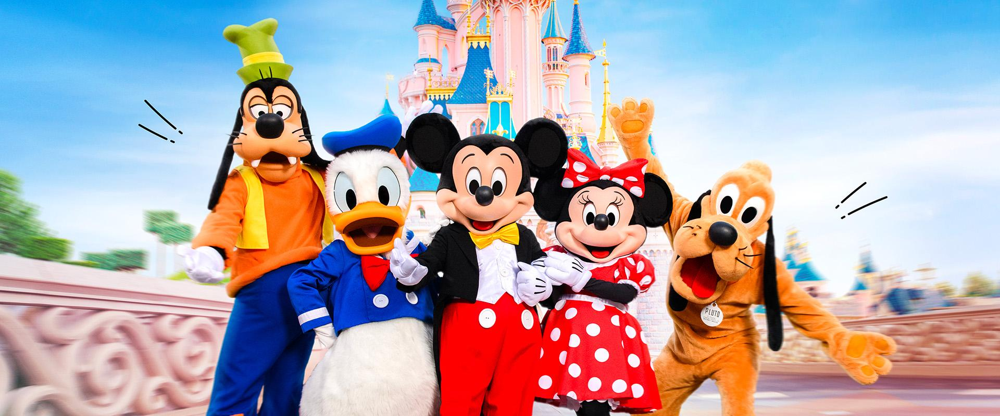
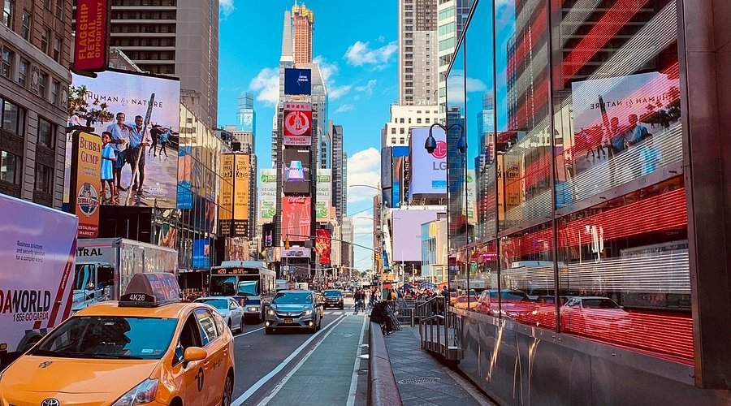

美國是全球影視娛樂的中心，而以迪士尼和漫威影業為代表的作品更是風靡全球，深刻影響著流行文化和旅遊體驗。
迪士尼作為一家歷史悠久的影視巨頭，創造了無數經典動畫電影如《獅子王》《冰雪奇緣》《美女與野獸》等， 其主題樂園如加州迪士尼樂園和佛羅里達的華特迪士尼世界，成為全球粉絲朝聖的熱門景點。 在這些樂園中，遊客能親身體驗電影中的場景與角色，感受魔法與童話故事的魅力。


漫威影業所打造的超級英雄宇宙，包括《復仇者聯盟》《蜘蛛人》《黑豹》等大片，在全球擁有龐大粉絲群。洛杉磯作為好萊塢的所在地， 不僅是電影製作的重鎮，也是許多漫威電影拍攝地， 如格里菲斯天文台、聖莫尼卡海灘等地標，多次出現於大銀幕，讓影迷猶如置身英雄故事之中。


此外，美國多樣的自然與都市風光，如舊金山金門大橋、紐約時代廣場等， 也曾是許多電影中重要的場景背景，融合了現代都市繁華與壯麗自然景觀，豐富著影視旅遊的體驗。
以迪士尼與漫威為核心，美國影視旅遊帶來不僅是視覺盛宴，更是夢想與英雄精神的具現化， 吸引著各年齡層的影視愛好者前往探索與體驗。